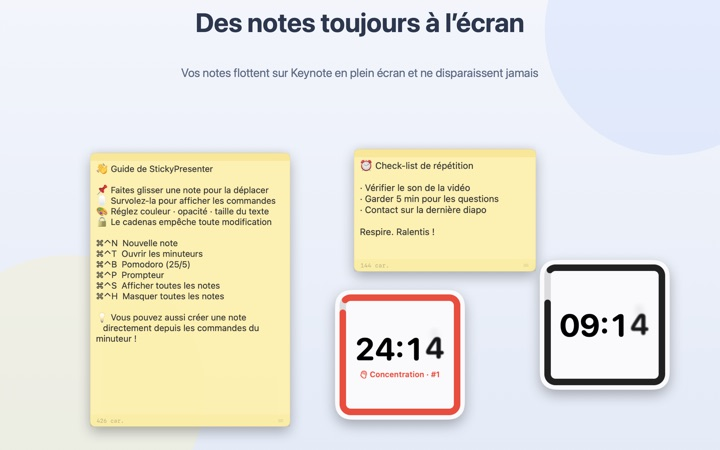
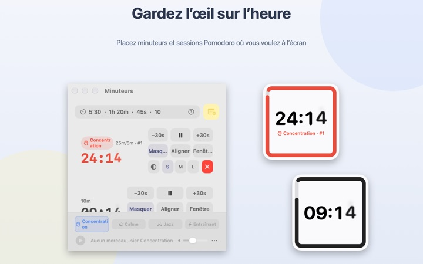
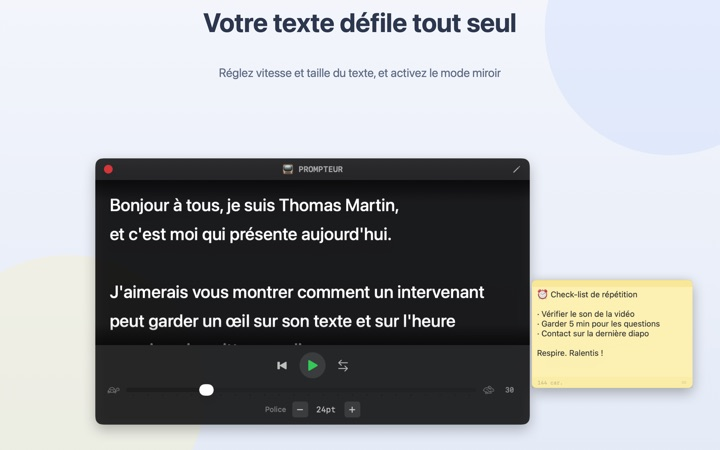
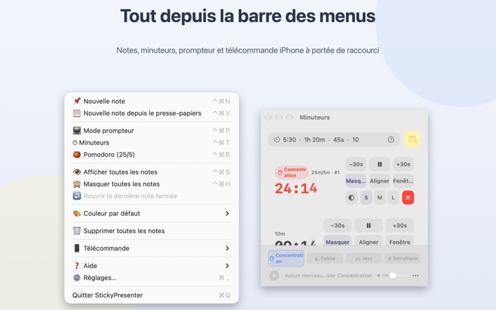

Votre texte et votre temps,
sur la diapo
Passez Keynote en plein écran : vos notes et votre minuteur restent par-dessus. Ils ne volent jamais le focus à l’app de présentation, votre télécommande fait donc toujours défiler les diapos.
Toutes les fonctions sont gratuites. macOS 14 ou ultérieur.

Essayez sur une diapo
Tapez une durée comme dans l’app. Touchez 15s pour voir comment le widget vous prévient quand le temps file.
Où mettez-vous votre texte et l’heure pendant une présentation ?
La vue présentateur réclame un second écran, et jeter un œil à sa montre, le public le remarque toujours. Vous avez peut-être déjà collé un papier sur votre portable avant de le voir tomber. StickyPresenter épingle votre texte et le temps restant juste au-dessus de la diapo, là où se pose déjà votre regard.
Un coup d’œil suffit pour savoir où vous en êtes
Un widget carré dans un coin affiche le temps restant. Il passe au rouge à l’approche de la fin, puis sonne et fait clignoter son bord quand c’est terminé.
Saisissez les durées comme elles viennent, 5:30 ou 1h 20m, ou tapez 25/5 pour un Pomodoro qui alterne concentration et pause. Ouvrez un minuteur dans sa propre fenêtre pour ne partager qu’elle en partage d’écran ou via AirPlay.

Lisez votre texte en regardant la caméra
Le prompteur fait défiler votre texte à la vitesse choisie et s’arrête tout seul à la fin. Copiez votre texte, appuyez sur ⌘⌃P, et il s’ouvre avec ce contenu.
Un mode miroir est prévu pour les prompteurs à vitre semi-réfléchissante, et la vitesse comme la taille du texte sont conservées pour la prochaine fois.

Sans quitter la diapo
L’app tourne discrètement dans la barre des menus, sans icône dans le Dock ni fenêtre à surveiller. Les raccourcis comme ⌘⌃N pour une nouvelle note ou ⌘⌃T pour les minuteurs répondent même dans Keynote en plein écran.
Sur scène, l’app iPhone gratuite Remote Controller for Sticky vous permet de lancer et mettre en pause le minuteur, et de déplacer le widget s’il masque une diapo.

Trois étapes pour commencer
- 1
Ouvrez l’app
Une icône de note apparaît dans la barre des menus, et un petit guide s’ouvre la première fois.
- 2
Ajoutez une note et un minuteur
Copiez votre texte et appuyez sur
⌘⌃V, puis tapez la durée de votre intervention dans le champ du minuteur. - 3
Passez en plein écran
La note et le minuteur restent au premier plan.
Raccourcis et formats de durée
- ⌘⌃N
- Nouvelle note
- ⌘⌃V
- Nouvelle note à partir du presse-papiers
- ⌘⌃T
- Afficher ou masquer les minuteurs
- ⌘⌃B
- Lancer un Pomodoro (25 min de concentration, 5 min de pause)
- ⌘⌃P
- Prompteur
- ⌘⌃S · ⌘⌃H
- Afficher ou masquer toutes les notes
- 10
- Un nombre seul, ce sont des minutes (10 min)
- 5:30 · 1:15:00
- Minutes:secondes, heures:minutes:secondes
- 1h 20m · 45s
- Avec les unités
- 25/5
- Concentration/pause, en boucle jusqu’à l’arrêt
Tous les raccourcis combinent Commande (⌘) et Contrôle (⌃) et fonctionnent même depuis une autre app. Les minuteurs vont jusqu’à 99:59:59.
Questions fréquentes
C’est vraiment gratuit ?
Oui. Toutes les fonctions sont gratuites, et l’app iPhone Remote Controller for Sticky est une app distincte, elle aussi gratuite. Si l’app vous rend service, vous pouvez laisser un pourboire au développeur dans les Réglages ; cela ne débloque rien.
Puis-je n’afficher que le minuteur en partage d’écran ou en recopie ?
Oui. Le bouton Fenêtre de la ligne du minuteur l’ouvre comme une fenêtre classique. Il apparaît alors dans la liste des fenêtres du partage d’écran et d’AirPlay, et vous pouvez ne partager qu’elle.
J’ai masqué un widget et je ne le retrouve plus.
Dans la fenêtre des minuteurs, survolez la ligne de ce minuteur : l’emplacement du widget s’entoure de pointillés. Cliquez sur Aligner pour le ramener à côté de la fenêtre.
J’ai fermé une note par erreur.
Avec Rouvrir la dernière note fermée dans la barre des menus, vous récupérez l’une des 20 dernières. Les notes s’enregistrent pendant la saisie et reviennent au même endroit quand l’app redémarre.
Un raccourci ne fonctionne pas.
Si le tableau des raccourcis du guide l’indique comme Utilisé par une autre app, c’est qu’une autre app l’a réservé avant. Quittez-la et il refonctionnera. Aucune autorisation d’accessibilité n’est nécessaire.
Pourquoi le thème Caméléon demande-t-il l’enregistrement de l’écran ?
Caméléon lit la couleur de l’écran derrière le widget pour s’y accorder, d’où cette autorisation. Rien n’est enregistré ni envoyé. Sans elle, les thèmes Système, Clair et Sombre fonctionnent normalement.
Comment ajouter une musique de fond ?
Choisissez une ambiance (Concentration, Calme, Jazz ou Entraînant) dans la barre musicale en bas de la fenêtre des minuteurs, et l’app crée un dossier pour chacune. Déposez-y vos morceaux : ils seront joués dans l’ordre avec le minuteur. L’app ne fournit pas de musique.
La télécommande iPhone ne trouve pas mon Mac.
Vérifiez dans l’ordre : StickyPresenter est ouvert sur le Mac (icône dans la barre des menus) ; les deux appareils sont sur le même Wi‑Fi, pas sur un réseau invité ni en données cellulaires ; Réseau local est autorisé pour l’app dans Confidentialité et sécurité, sur l’iPhone comme sur le Mac ; le VPN est désactivé.
La télécommande indique un code d’appairage incorrect.
Saisissez le code à quatre chiffres affiché en ce moment sous Télécommande dans la barre des menus du Mac. Si vous avez cliqué sur Nouveau code d’appairage, seul le nouveau est valable. Une fois appairée, la télécommande se connecte dès l’ouverture de l’app.
Quelqu’un d’autre pourrait-il contrôler mon minuteur ?
Pas sans votre code. Le Mac n’accepte que les télécommandes qui ont saisi le bon code, via une connexion directe chiffrée sur votre réseau local. Si quelqu’un a vu le code, utilisez Nouveau code d’appairage ou Oublier les télécommandes appairées sous Télécommande dans la barre des menus.
Où sont stockés mes notes et mes textes ?
Uniquement sur ce Mac. Pas de compte, pas de pub, et rien ne part sur internet hormis des statistiques d’utilisation anonymes et les retours que vous choisissez d’envoyer.
Une question, un bug, une idée ? Écrivez à mizzking75@gmail.com.